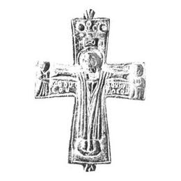

Catalog › CE-0240 · KOR2003-I.1.24
Valvă de față de encolpion cu Răstignire și adstanți, Hristos în colobium, soare și lună cu ΦС
sec. X–XII (901–1200) · loc necunoscut · Ermitajul de Stat (GE), Sankt Petersburg, secția de arheologie a Europei de Est și Siberiei (OAVEC), inv. 2038/185
single valve of a reliquary cross, aramă; c. X–XII (901–1200); find spot unknown; kept at Ermitajul de Stat (GE), Sankt Petersburg, secția de arheologie a Europei de Est și Siberiei (OAVEC).


Identificare
- Categorie
- Valvă izolată
- Material
- Aramă
- Tehnică
- Turnare în relief; Gravare (incizie)
- Dimensiuni
- Î 70 × L 54 × Gr 5 mm
Iconografie
- Avers
- Răstignirea (Hristos în colobium); Sf. Ioan
- Descriere avers
- Valvă de față de encolpion cu capete drepte, ușor lărgite; terminațiile ambelor balamale sunt rupte, s-au păstrat numai bazele lor cu 5 petale. Imaginea Răstignirii cu adstanți, cu lemnul crucii evidențiat, tăbliță și suppedaneum, este executată în relief turtit, cu excepția capului lui Hristos, redat în relief înalt. Hristos este reprezentat cu capul ușor înclinat, brațele drepte, în colobium, ale cărui falduri, ca și chipul Mântuitorului, sunt prelucrate în detaliu cu dalta. Pe mâinile și picioarele Răstignitului stigmate. Figurinele adstanților, Maica Domnului și Sf. Ioan Evanghelistul, redate în picioare și frontal, sunt așezate chiar la marginea capetelor laterale. Imaginile soarelui și lunii deasupra Răstignirii sunt de asemenea în relief jos; între ele, cu linii adâncite, literele ΦС. Marginile valvei sunt subliniate cu o linie dreaptă adâncită. Inscripții adâncite, pe două rânduri, sub mâinile lui Hristos (după Ioan XIX, 26–27): la stânga – ІДЕ/ОVО/СОV, la dreapta – ІДОVНМН/ТНРСОV.
- Inscripții
- ΦС; ІДЕ/ОVО/СОV; ІДОVНМН/ТНРСОV
- Limba
- Greacă
Datare și atribuire
- Datare
- sec. X–XII (901–1200)
- Centru
- Necunoscut
- Tipologie
- Korzukhina–Peskova 2003, tip I 1
Descoperire
- Context
- Colecție (fără context)
Păstrare și referințe
- Colecție
- Ermitajul de Stat (GE), Sankt Petersburg, secția de arheologie a Europei de Est și Siberiei (OAVEC)
- Nr. inventar
- 2038/185
- Bibliografie
- G. F. Korzukhina, A. A. Peskova, Древнерусские энколпионы. Нагрудные кресты-реликварии XI–XIII вв., Sankt-Petersburg, 2003 [Korzukhina–Peskova 2003], p. 49, cat. nr. I 1/24, reprodusă la Табл. 3 (planșe, p. 245).
- Figura
- Табл. 3
- Planșe
- Korzukhina–Peskova 2003, Табл. 3 (planșă fără paginație proprie în PDF; p. 245 tipărită)
- Observații
- Datare după Peskova: sec. X–XII. Proveniență în colecție: intrat din Muzeul de Etnografie în 1954. Dimensiuni: grosime 0,5–0,6 cm. Coordonate: nu sunt date în sursă.
Citare: Corpus Encolpiorum, CE-0240, Valvă de față de encolpion cu Răstignire și adstanți, Hristos în colobium, soare și lună cu ΦС, --root/piese/KOR2003-I.1.24/ (accesat 2026-10-17).